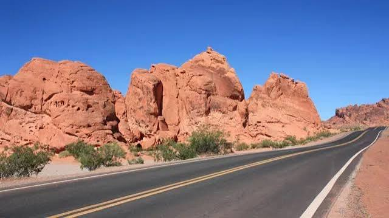

Nevada ist ein US-Bundesstaat im Mittleren Westen der Vereinigten Staaten. Der Name Nevada stammt aus der spanischen Sprache mit der Bedeutung
„flaches Wasser“. Der Name rührt vom Platte River, der durch den Staat fließt. Ursprünglich Teil der „Great American Desert“, ist Nevada jetzt einer der größten Produzenten
landwirtschaftlicher Erzeugnisse. Hiervon zeugt auch der Beiname Nevadas: Cornhusker State („Maisschäler-Staat“).
Quellen- und Lizenzhinweis:
Dieser Text basiert auf dem Wikipedia-Artikel
Nevada
(geänderte Fassung) und steht unter der Lizenz
Creative Commons Attribution-ShareAlike 4.0 International (CC BY-SA 4.0).
Das Bild ist von
USA Reisetipps